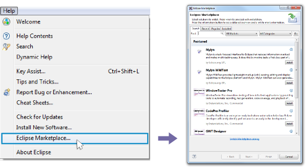

Sirius Web version is now available! Learn More
This free package has been created by Sirius commiters to facilitate your first steps with Sirius. It contains Sirius, neatly integrated with other Open Source technologies (EMF Compare, eGit and SWTBot).
Obeo Designer Team edition facilitates the collaboration with your other team members. Models and representations (diagrams, tables, trees) created with Sirius are stored in a shared repository.
Discover Sirius Web, the open-source sub-project to easily create and deploy studios to the web. All the principles you like in Sirius Desktop, available on a modern cloud-based stack.
Requirement: Please make sure that Marketplace is already installed in your Eclipse, otherwise these installation instructions won't work as expected.
Obeo Designer Team edition facilitates the collaboration with your other team members. Models and representations (diagrams, tables, trees) created with Sirius are stored in a shared repository.
Discover Sirius Web, the open-source sub-project to easily create and deploy studios to the web. All the principles you like in Sirius Desktop, available on a modern cloud-based stack.
Browse the Marketplace, choose Sirius and just click on the install button.

Requirement: Please make sure that Marketplace is already installed in your Eclipse, otherwise these installation instructions won't work as expected. For more details, please refer to Introducing the Eclipse Marketplace Client installation guide.
Add this URL to your Eclipse Installation to reach Sirius Update Site.
You can also download the corresponding zipped archive for offline installation.
Add this URL to your Eclipse Installation to reach Sirius Update Site.
Obeo, co-leader of Sirius, provides professional services from the set-up to the deployment of your industrial-strength modeling workbenches created with Sirius.